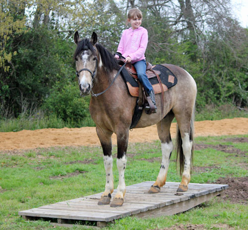
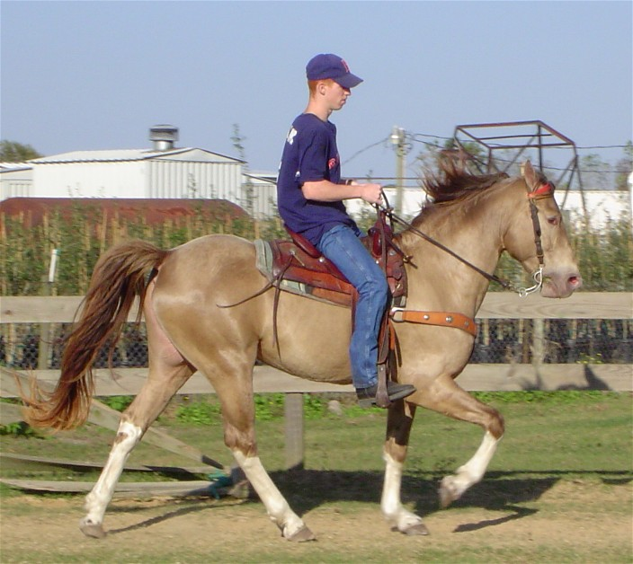
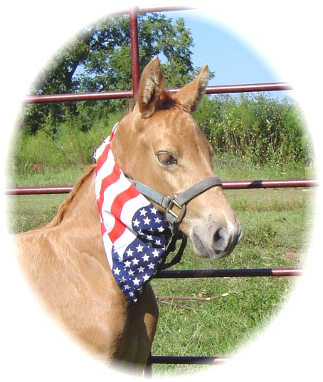

"Alen's Painted Desert" --**SOLD** Meet our sure-footed, four-beat gaited, rocking chair cantering, easy, gentle Spotted Alen Again bred buckskin tobiano gelding. Gentle as a puppydog and most anyone can ride him and feel safe. Head-shaking Tennessee Walk, slow carousel canter, side passes, forehand turns, pivots, water obstacles, can pony colts off of him, hauled across the nation on camping trips -- click on his picture to see more info and video. This horse is ready for competitive trail competition, hauling across the nation for trail riding, working cattle, or anything you might want to do with him. $15,000 Click on his picture for more information and his history. **SOLD**
For anyone who has lost a loved one or a cherished pet, please click HERE.

"Go Boy's Champagne Pride", known around the barn as "Gunsmoke"
Click here to see GO BOY'S CHAMPAGNE PRIDE (Gunsmoke) info and progeny
Want a Tennessee Walking Horse that looks like this? Check out our baby page to buy your own Tennessee Walking Horse colt/filly sired by this stallion and other beautiful stallions.
Click here:  for babies for sale.
WARNING: This stallion ( "Go Boy's Champagne Pride", also known as "Gunsmoke") may not be exciting enough for your taste. (Click on his picture to go to his page.) This is the first time (on 9/1/05) that he has been ridden in two years, and Jennifer chose to ride him bareback. She thought (actually hoped) that he would challenge her riding skills, and after a 20-minute workout with no misbehavior for her to practice her horse whispering on, she couldn't decide whether to challenge him herself or hug him, so she did both!!
Created by Kelly Cho from UNC-CHAPEL HILL
All of the photos in the page are from the original owners of the cloud9 walkers website.
{kind=link}